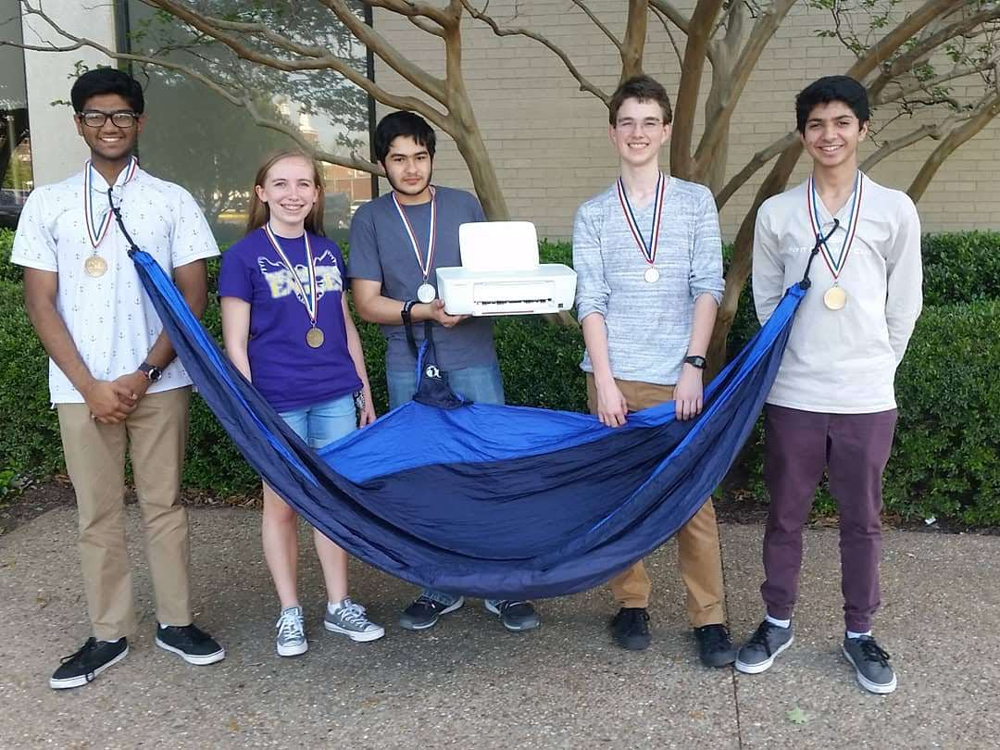
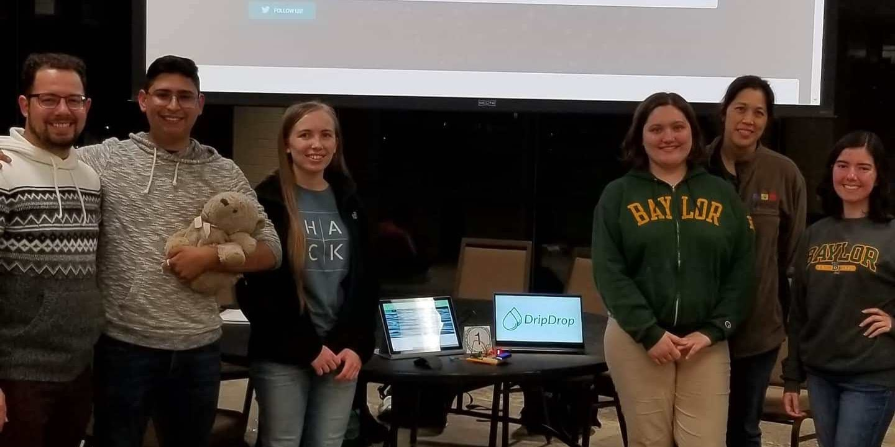
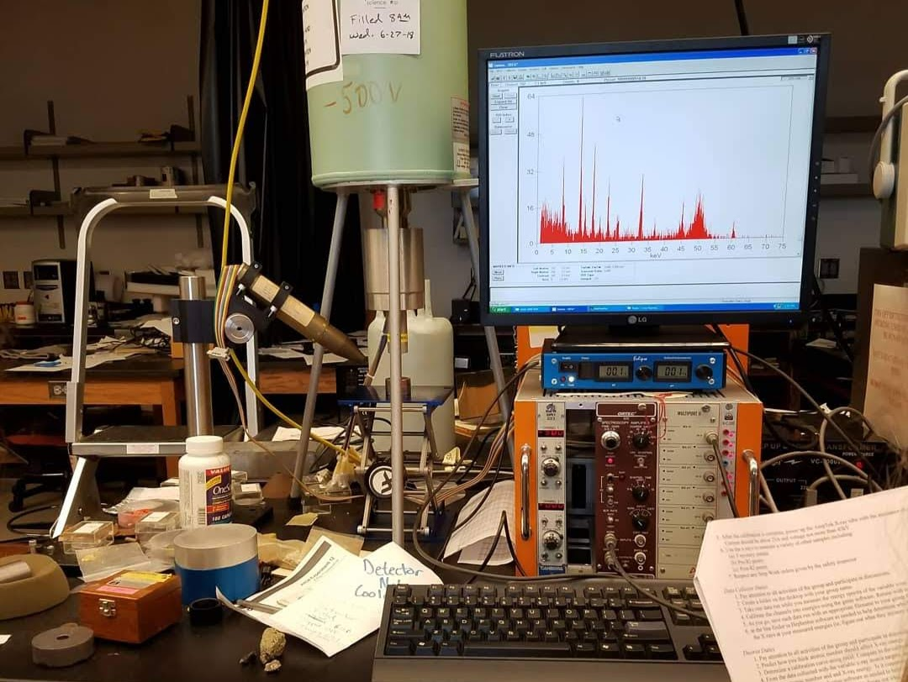
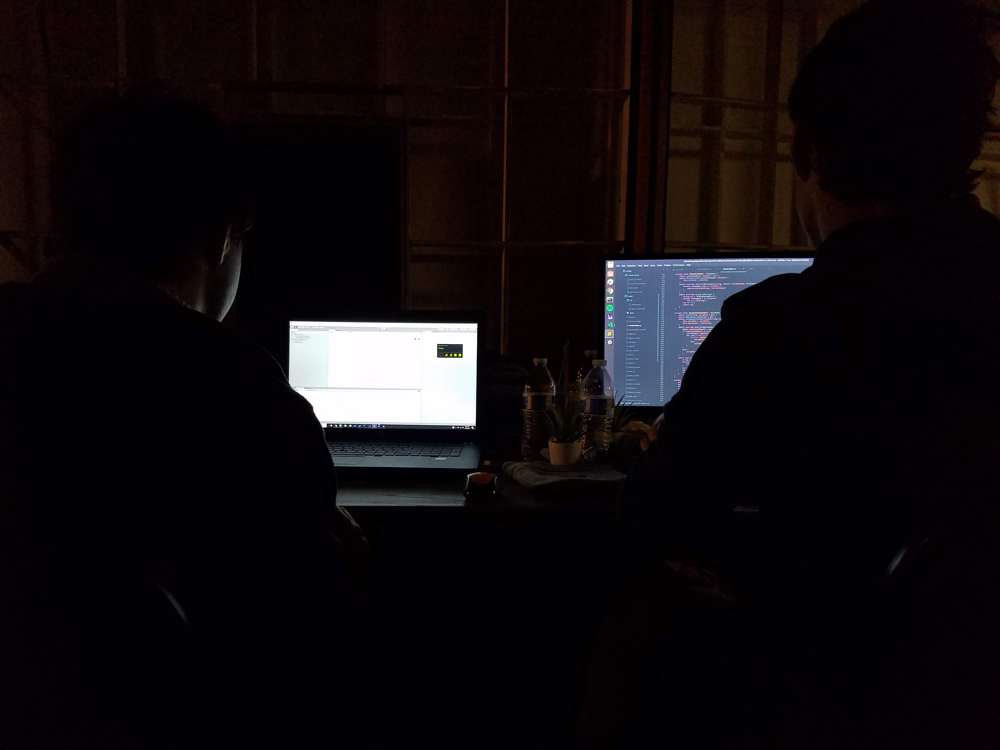
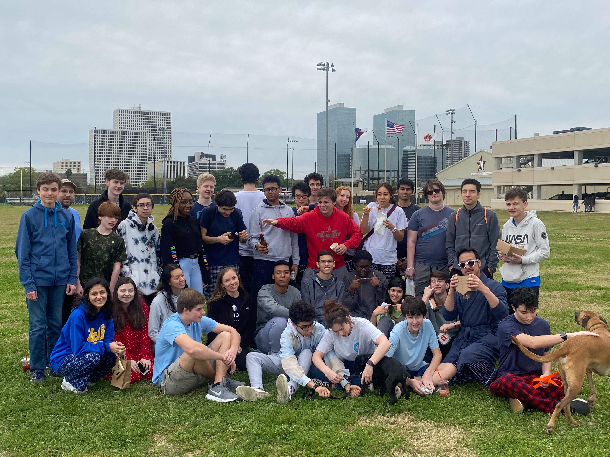
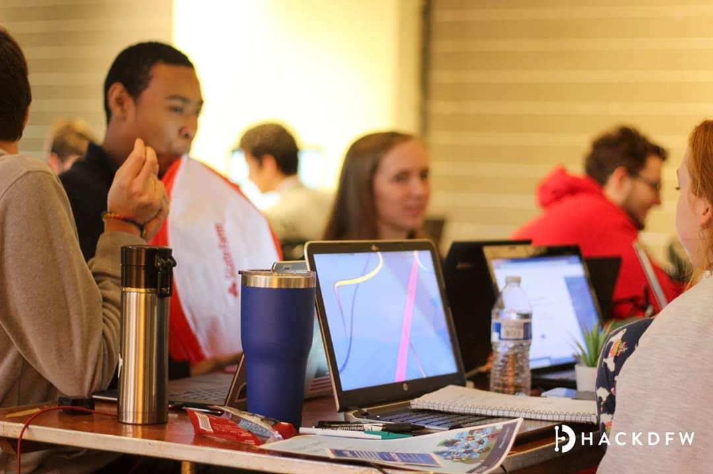
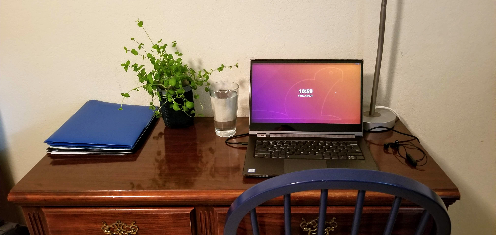
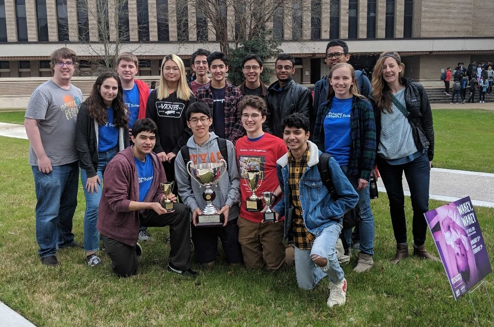
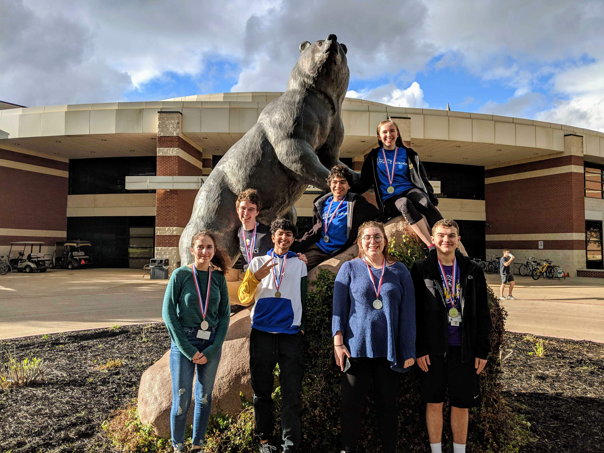

GPT-3 is a machine learning model that writes predictive text. I gave it my college essay and I got some interesting stories of my
future!
What is GPT-3?
GPT-3 is a machine learning model based on natural language processing (NLP). Some NLP models translate text. Other models with a
similar structure can be used to solve a wide variety of problems from protein folding to (hopefully) analyzing CERN data.
What did GPT-3 write?
I gave GPT-3 the following prompt:
I remember timidly walking into room C215 to join the math and science club that I had only heard about on the announcements. As I
looked around, I noticed that I was the only girl, the only freshman, the only blonde, and the only one there who was not already
invested in computer science. I stuck around long enough to attend the first competition,

Here's what I got:
...the highly competitive Battle of the Brains, where I placed in the top 5. I did not realize that I would be competing at my very
first hackathon at the following spring's U-M hackathon, or that my mom would show up to support me. I was a natural in the group,
hacking together projects to make a great group of people laugh, feel challenged, and produce tangible results.
I graduated in May with a degree in computer science and electrical engineering. At the hackathon I just returned from, I

...where I was unable to attend any of the after school events due to a miscommunication. I was also, sadly, not the only girl in the
room at the time. I heard something very surprising as I entered the room the first day of my freshman year. The three upperclassmen at
the front of the room quickly expressed the fact that they were putting me in charge of presenting for their new group of nerdy
first-years. I wasn't sure what to think, but I ended up jumping at the chance to learn more. This
...and I walked away a winner. Once again, the pieces of the puzzle started to come together. Science is my passion, and I have a passion
for math. As I entered high school, I decided that high school was the best time to combine my two passions. When I asked the school
counselor what classes were offered at Coeur d'Alene High School, she sent me to the career services office. I was always interested in
molecular biology and zoology. The counselor there suggested I sign up for the following:

...which was a great way to find my friend
Josh and get to know the people I would later come to know as my friends. After that, though, I quickly realized that I didn't
have a lot in common with most of the students in the club and left. I was also uncomfortable with the idea of going to any large
tech event. I had this image of a row of men sitting around a table discussing programming all night. When it came to tech
competitions, I had limited knowledge of everything that was going on in those

...and then that was it. I didn't return. I felt somewhat relieved that I didn't have to work to feel accepted at Georgetown, because
I was quickly becoming a pariah.
Dive Brief:
Attending a women's college and working on a women's studies thesis made me look at my school and my major in a different way. I wanted
to create spaces at Georgetown where students could talk about subjects they were passionate about in a less masculine environment.
The New Faculty Attitude Survey reports that only 33
...where I discovered that one thing was for certain: I loved math. What started out as a love for a seemingly out-of-reach subject
turned into a future career in my field. My mom daid that if I were good at math, I could do anything. The competition motivated me
to take math more seriously, and ultimately led to my undergraduate degree in computer science. My junior year, I started a small
software company with my childhood friend who was also my roommate. We learned everything about engineering

... and I remember feeling elated to have found a new group of friends who enjoyed the same things I did.
I stayed with computer science because I felt safe. I didn't feel like I had to mask my femininity, as much as I often do to fit in
with the rest of the boys at school. And even though I felt a little alienated by my non-computer science counterparts, there was a
difference: when I mentioned meeting at the library on Wednesday, they asked about the upcoming dance, and we talked about it.

...in which the only other girl in the competition was also from my school. I left early, realizing I was wasting my time.
I didn't participate in any activities at school after that, even the robotics club, because I thought it would just be more of the
same. I worked in the laboratory for my degree, taking the content for the next chapter, developing the experiments, teaching the
students, and even helping students design their projects. I was paid more and given more freedom to think and to

...and I found myself immediately enjoying the team spirit. It felt good to have some of my extracurriculars in my identity
again, and I had missed being involved with such a creative, smart, and confident group. Since then, I have discovered that
math is one of the most important things in the world. But for most kids in middle school, being involved with a club that
incorporates science, technology, engineering, and mathematics is very hard to do. While it may be true that there are few
girls

...where I realized how much I had to learn about computer science and programming. This experience set the tone for my entire
computer science education: Start as you mean to go on.
Although I had to start at the bottom, I worked my way up, first through a team, then taking assignments as an intern, then a
full-time employee, and finally being hired full time. In 2013, I was a machine learning intern at Google, leading a team in
data mining and pattern detection. Today, I work as a research.

What I learned
1. Predicting my future is a skill that AI is surprisingly not that bad at.
2. Women in STEM is a common theme on the internet and GPT-3 picked up on this in my essay very quickly!
3. It is easy for me to highlight coincidences and dismiss mistakes when evaluating a promising new technology. For example,
I did go to hackathons and I made a friend (named James, not Josh) but many other details were completely wrong and sometimes
even inconsistent.
4. Several times it guessed (correctly) that "being the only one not already invested in computer science" led to a future in
computer science.
5. Maybe I'm just too predictable!